A middle aged female with PSVT
Raja Selvaraj, JIPMER
Learning
- Hear - Forget
- See - Remember (Visual)
- Do - Understand (active participation)
- Think - Learn (answer questions)
Edgar Dale's cone of learning
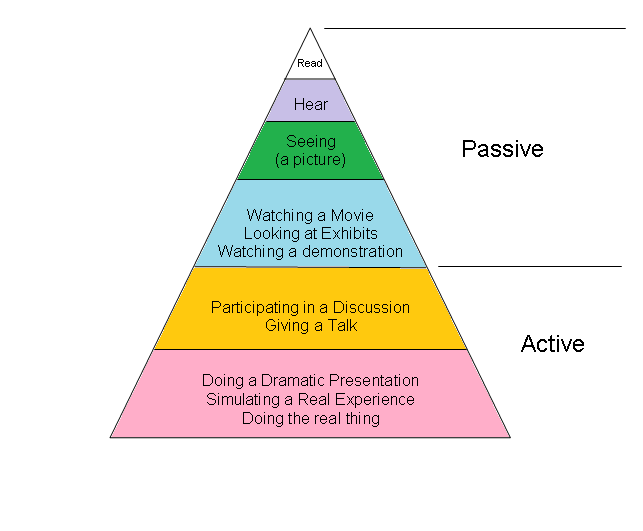
Socratic method
Presentation
- Middle aged female
- Episodic palpitations
- Documented narrow QRS tachycardia
Baseline measurements
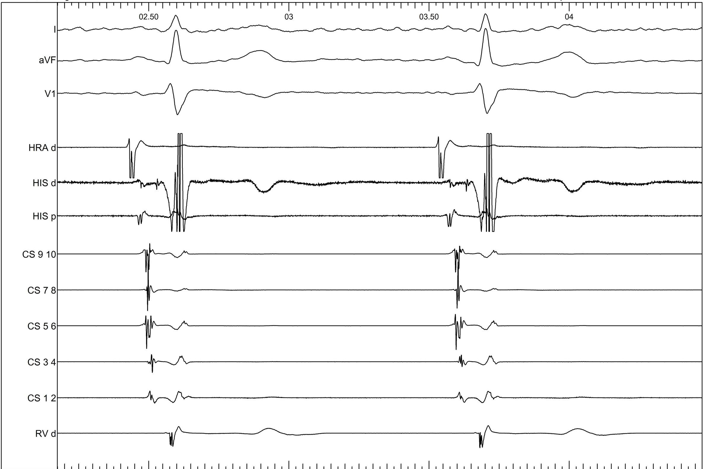
Ventricular pacing
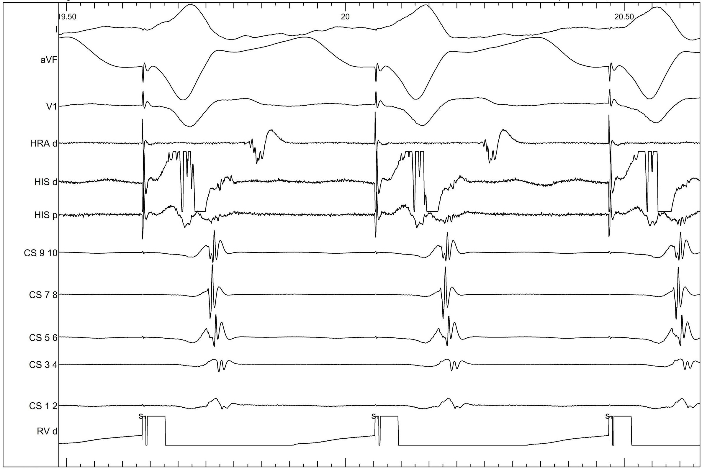
Posterior AV nodal extensions
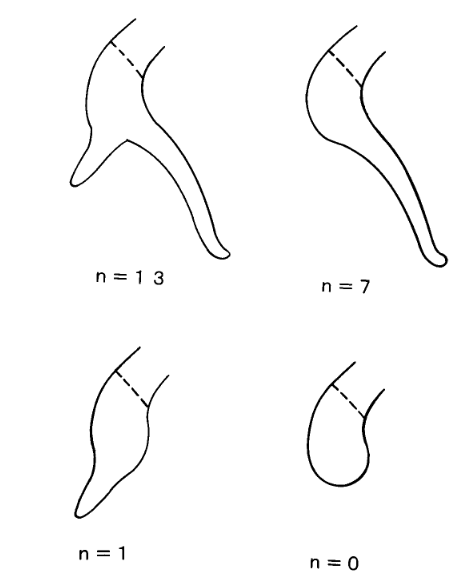
Inoue S, Becker AE. Posterior extensions of the human compact atrioventricular node: a neglected anatomic feature of potential clinical significance. Circulation. 1998;97(2):188–193
Ventricular extrastimulus
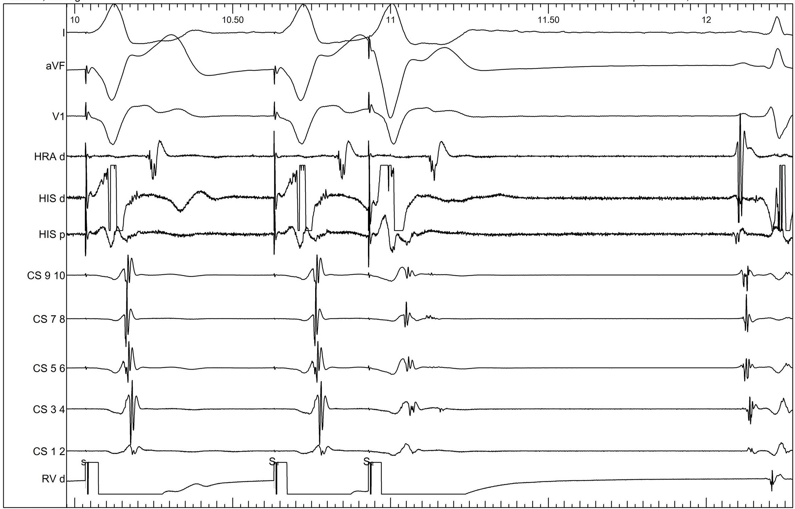
Double potentials in the coronary sinus
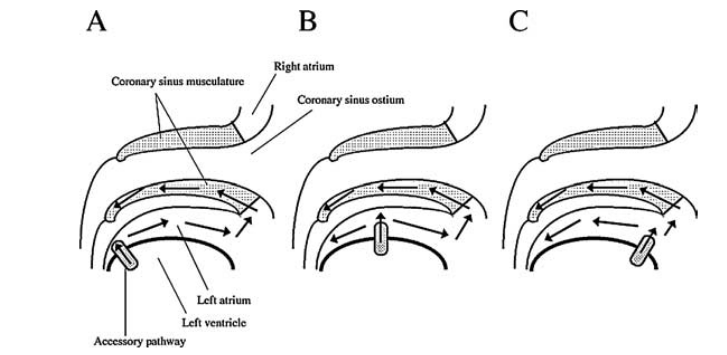
AKIYAMA et al. Coronary Sinus Recordings of Double Potentials Associated with Retrograde Conduction Through Left Atrioventricular Accessory Pathways. JCE 2004, 15: 1371–1376. doi:10.1046/j.1540-8167.2004.04422.x
Double potentials in the coronary sinus
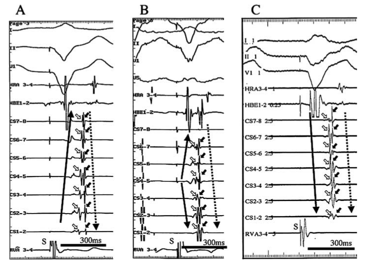
Atrial extrastimulus
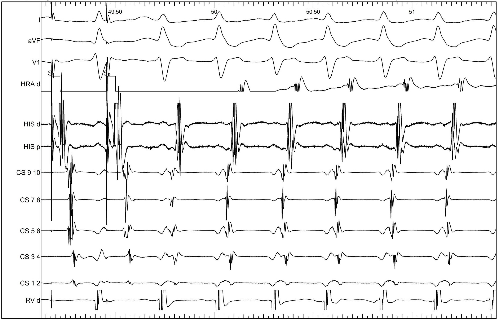
Ventricular burst pacing

Ventricular overdrive - Beginning
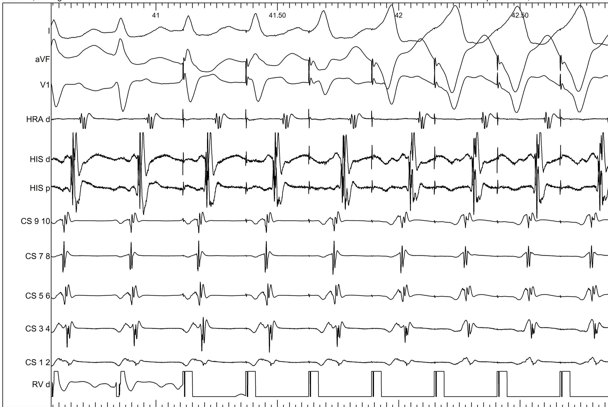
Ventricular extra
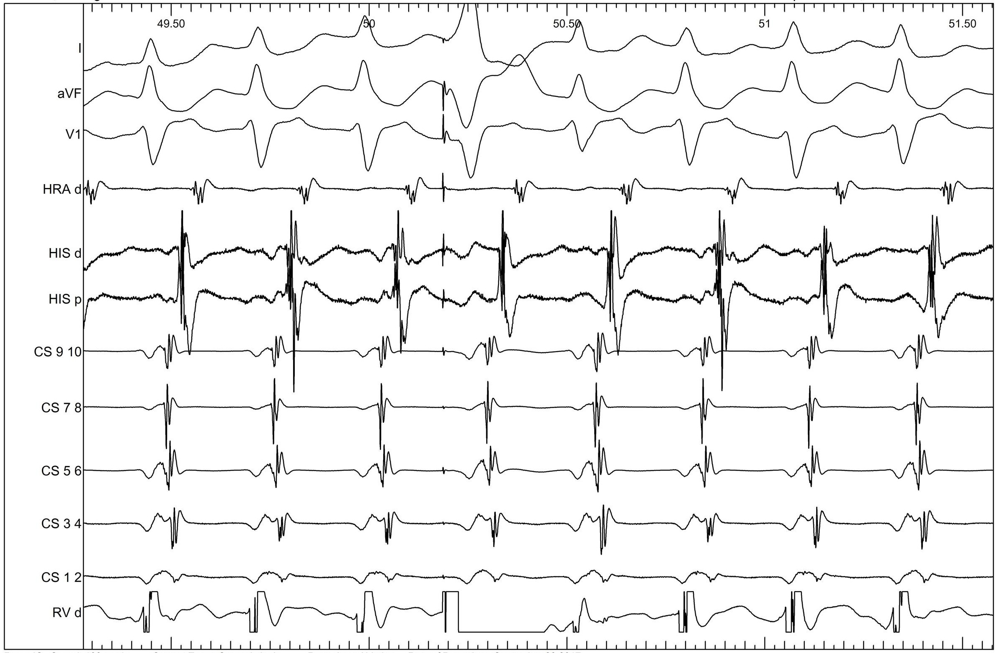
PVC by coupling interval
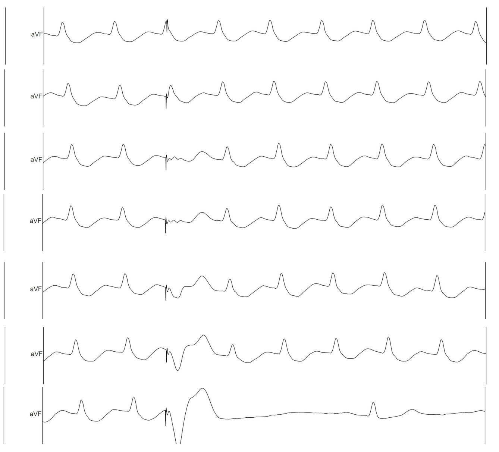
Summarise so far
- Regular NQRST
- Central atrial activation, VA 70
- VOP terminates
- His refractory PVCs dont preexcite
- What next?
Parahisian
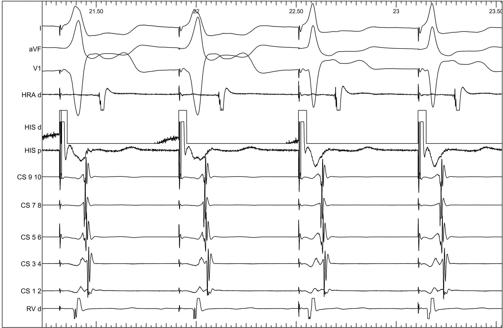
Parahisian pacing in a Posteroseptal AP
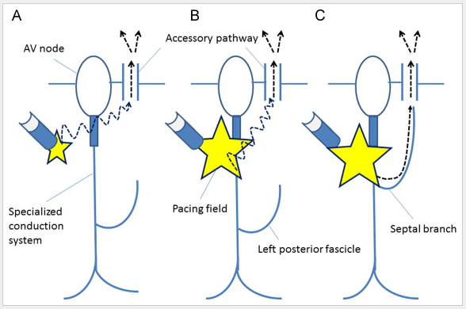
Measurement of the ventriculoatrial interval from the coronary sinus during para-Hisian pacing may fail to distinguish ventriculoatrial nodal conduction from conduction over a septal accessory pathway. Iijima, Takafumi et al. Journal of Arrhythmia , Volume 31 , Issue 1 , 33 - 37
Ventricular overdrive Isoprenaline
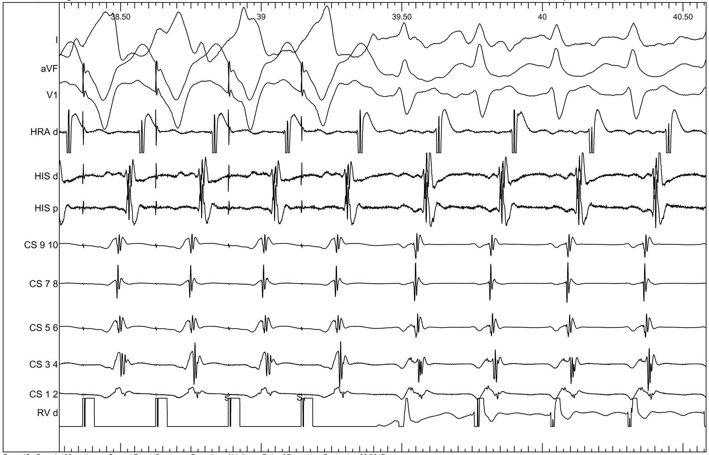
Where are we ?
- Parahisian confirms presence of concealed AP
- VOP confirms AVRT
- What approach to map?
Where do you want to map
Delta VA
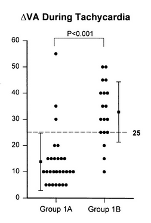
Chiang CE, Chen SA, Tai CT, Wu TJ, Lee SH, Cheng CC, Chiou CW, Ueng KC, Wen ZC, Chang MS. Prediction of successful ablation site of concealed posteroseptal accessory pathways by a novel algorithm using baseline electrophysiological parameters: implication for an abbreviated ablation procedure. Circulation. 1996 Mar 1;93(5):982-91. PubMed PMID: 8598090.
Sequence of potentials in CS
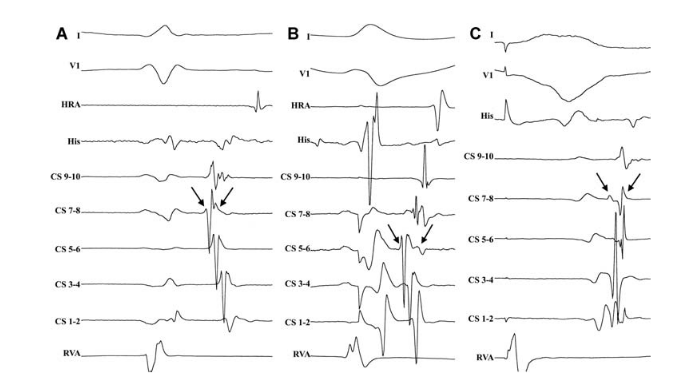
PAP, R., TRAYKOV, V. B., MAKAI, A., BENCSIK, G., FORSTER, T. and SÁGHY, L. (2008), Ablation of Posteroseptal and Left Posterior Accessory Pathways Guided by Left Atrium–Coronary Sinus Musculature Activation Sequence. Journal of Cardiovascular Electrophysiology, 19: 653–658. doi:10.1111/j.1540-8167.2008.01103.x
Where do you want to map
CS-LV connections
- 480 patients with posteroseptal / left posterior APs
- CSAP in 171
- CS diverticulum in 36
- Fusiform enlargement of a tributary in 15
- Normal in others
Coronary Sinus-Ventricular Accessory Connections Producing Posteroseptal and Left Posterior Accessory Pathways Incidence and Electrophysiological Identification. Sun, Arruda, … Jackman. Circulation. 2002;106:1362-1367
CSAP with normal CS
- MCV in 82%
- PCV in 11%
- Both in 5%
- Floor between both in 2%
Coronary Sinus-Ventricular Accessory Connections Producing Posteroseptal and Left Posterior Accessory Pathways Incidence and Electrophysiological Identification. Sun, Arruda, … Jackman. Circulation. 2002;106:1362-1367
CS venogram
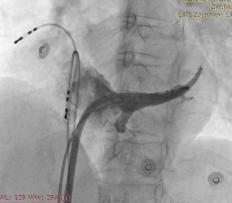
Successful site
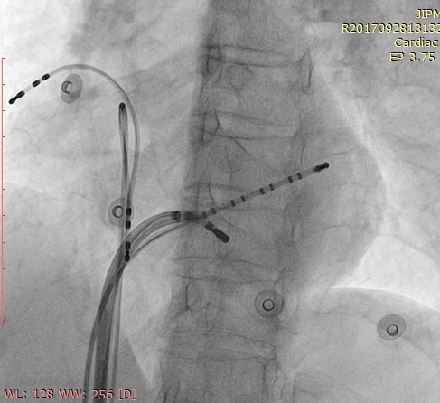
Signal within MCV
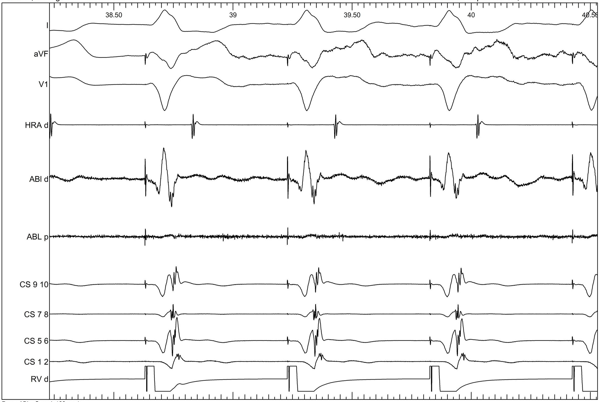
Successful ablation
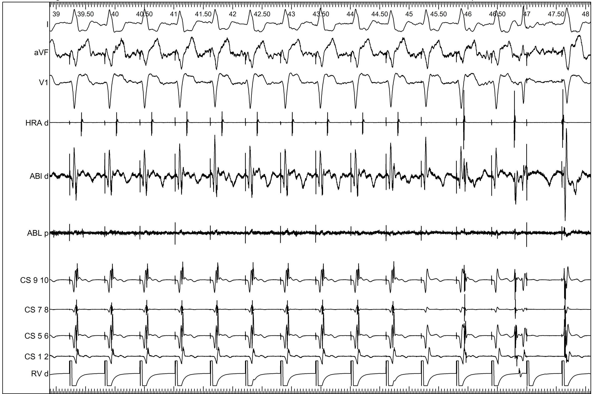
Post ablation
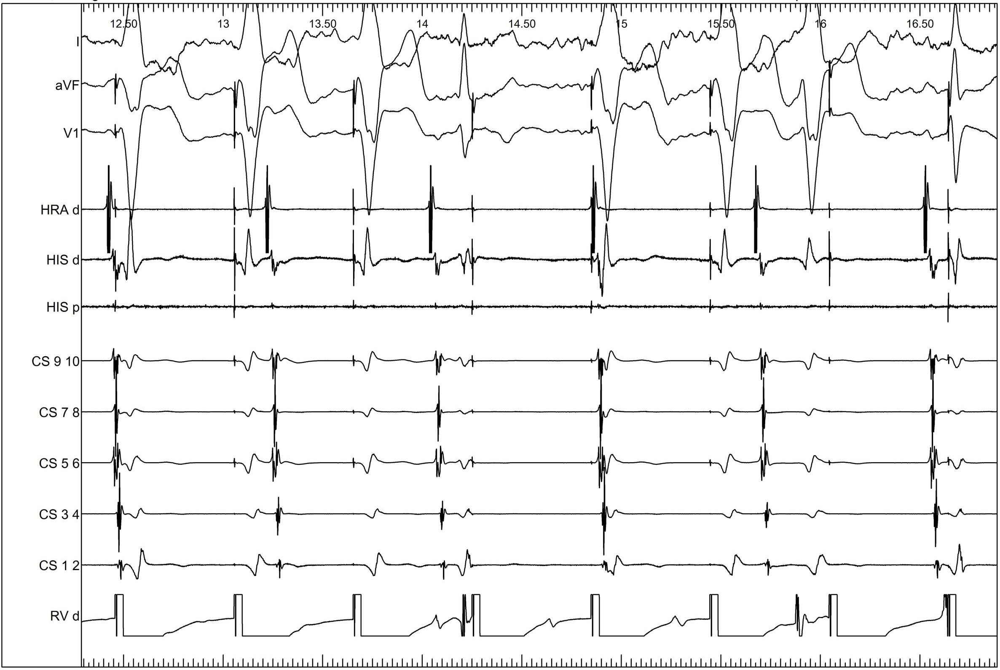